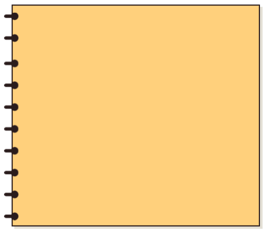

천혜향

다른 만감류와 달리 껍질에 붉은 빛깔이 돌아 이름 붙은 레드향은 한라봉과 귤의 교배종입니다. 1991년 일본 에히매현에서 육성된 품종으로, 2009년에 우리나라에서 재배가 시작되었는데요. 당도가 매우 높으며 과육이 부드럽고 껍질을 벗기는 것도 쉬운 편이라 각광받고 있는 만감류랍니다. 모양은 천혜향이나 황금향과 비슷하지만 둘을 놓고 비교하면 레드향이 더 붉고 약간 울퉁불퉁하기 때문에 육안으로도 구별할 수 있습니다.